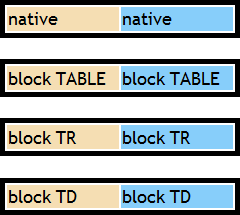
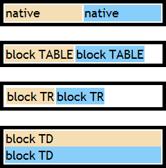
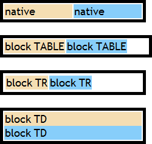
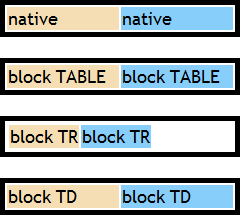

根据 CSS2.1 规范中的描述，CSS 中的表格模型基于 HTML4 的表格模型，包括了表格，标题，行，行组，列，列组以及单元格。下列 'display' 特性的值可以将表格语义指派给一个任意的元素：
| 'display' 特性的值 | 对应 HTML 中的元素 |
|---|---|
| table | TABLE (block-level) |
| inline-table | TABLE (inline-level) |
| table-row | TR |
| table-row-group | TBODY |
| table-header-group | THEAD |
| table-footer-group | TFOOT |
| table-column | COL |
| table-column-group | COLGROUP |
| table-cell | TD, TH |
| table-caption | CAPTION |
附录中的 HTML4 缺省样式表 说明了这些值在 HTML4 中的应用：
table { display: table } tr { display: table-row } thead { display: table-header-group } tbody {
display: table-row-group } tfoot { display: table-footer-group } col { display: table-column } colgroup
{ display: table-column-group } td, th { display: table-cell } caption { display: table-caption }
用户端对于 HTML 表格元素可能忽略这些 'display' 特性值，因为 HTML 表格可能出于向后兼容而使用其他有意图的算法。然而这并不代表不可以在其他非表格的 HTML 元素上使用 'display:table'。
关于 CSS 表格模型 特性的更多信息，请参考 CSS2.1 规范 17.2 The CSS table model 中的内容。
在 IE 中，为 TABLE 及 TD 等表格类元素设定 CSS2.1 规范附录中 "HTML4 缺省样式表" 之外1的 'display'
特性值并不会影响其元素的原生特性及表现形式。
而其他浏览器中，这些设定的 'display' 特性则会覆盖该表格类元素的原生特性。
注 1: 对于 TABLE 元素还包括 'display:inline-table'。
此问题可能导致为表格类元素设定了某些 'display' 特性值后在非 IE 浏览器中表格类元素的原生特性改变，从而影响到布局。
| IE6 IE7 IE8 |
|---|
由于 HTML 表格类元素众多，CSS2.1 中 'display' 特性的属性值也众多，本文将挑选常用的表格类元素以及 'display' 特性值进行重点分析。
分析以下代码：table_display.html
<!DOCTYPE html> <html> <head> <style> * { font:18px/1.2 'Trebuchet MS'; }
</style> </head> <body> <table style="width:240px; border:5px solid
black;"> <tr> <td style="background:wheat;">native</td> <td
style="background:lightskyblue;">native</td> </tr> </table> <br />
<table style="width:240px; border:5px solid black; display:block;"> <tr> <td
style="background:wheat;">block TABLE</td> <td
style="background:lightskyblue;">block TABLE</td> </tr> </table> <br
/> <table style="width:240px; border:5px solid black;"> <tr style="display:block;"> <td style="background:wheat;">block
TR</td> <td style="background:lightskyblue;">block TR</td> </tr>
</table> <br /> <table style="width:240px; border:5px solid black;">
<tr> <td style="background:wheat; display:block;">block
TD</td> <td style="background:lightskyblue; display:block;">block TD</td> </tr> </table> </body>
</html>
上述代码包含 4 组结构一样的 TABLE-TR-TD 元素，第一组没有单独为表格类元素设定任何其他 'display' 特性的值，为原生渲染；后面三组分别将 TABLE、TR、TD 元素的 'display' 特性值设定为 'block'。
这段代码在不同浏览器中运行结果如下：
| IE6 IE7 IE8 | Firefox Opera | Chrome(Q) Safari(Q) | Chrome(S) Safari(S) |
|---|---|---|---|
|  | 1 |  |  |
可见：
而 CSS2.1 规范中仅提到用户端对于 HTML 表格元素可能忽略这些 'display' 特性值，并没有明确地说对于表格类元素，其默认 'display' 特性是否可以被其他值替代从而改变其原生特性。此时恰恰在不同浏览器中出现了差异。
注 1: Firefox、Opera 中 TABLE 元素默认样式中分别有的 '-moz-box-sizing' 与 'box-sizing' 特性，其值均为 'border-box'，本文忽略这个差异。
注 2: IE6 IE7 IE8(Q) 不支持 'display:table' 等表格类的值。
避免改变表格类元素的默认 'display' 特性。若需要隐藏某个表格类元素，即设定其 'display' 特性为 'none'，之后需要恢复其的可视状态，可以为其设定一个非法的 'display'
特性的值，如：TR.style.display = "";
| 操作系统版本: | Windows 7 Ultimate build 7600 |
|---|---|
| 浏览器版本: |
IE6
IE7 IE8 Firefox 3.6.10 Chrome 8.0.552.0 dev Safari 5.0.2 Opera 10.63 |
| 测试页面: | table_display.html |
| 本文更新时间: | 2010-10-14 |
TABLE display TR TD block 表格